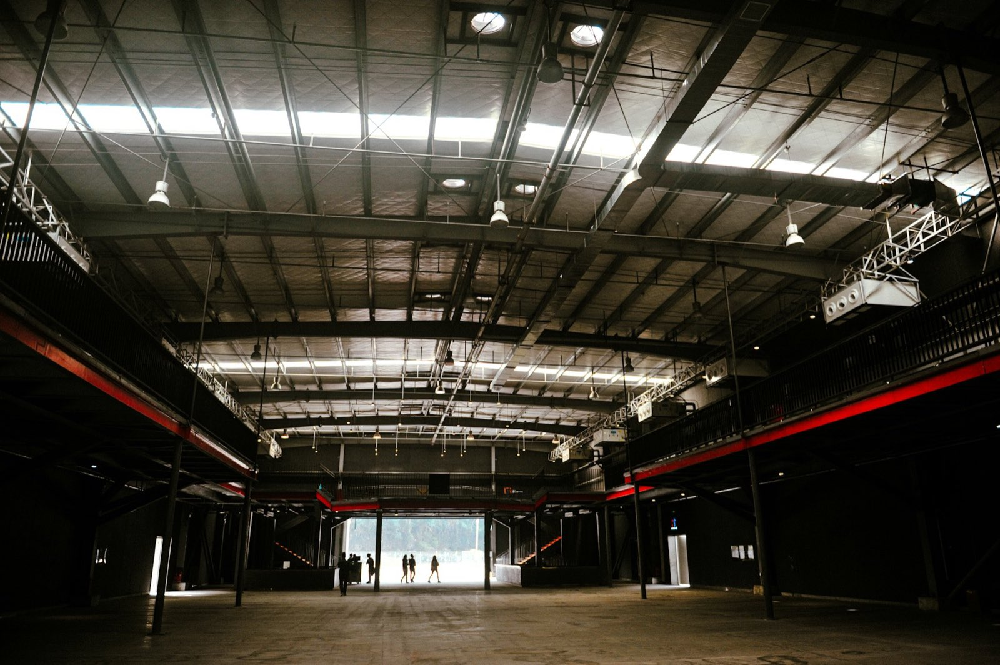
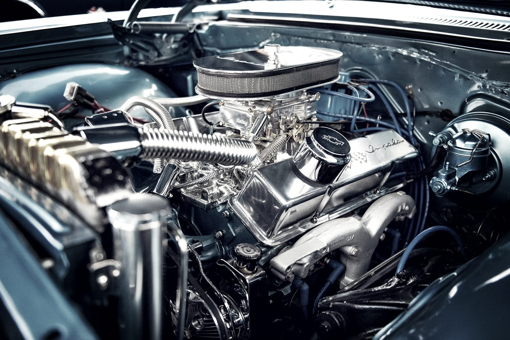
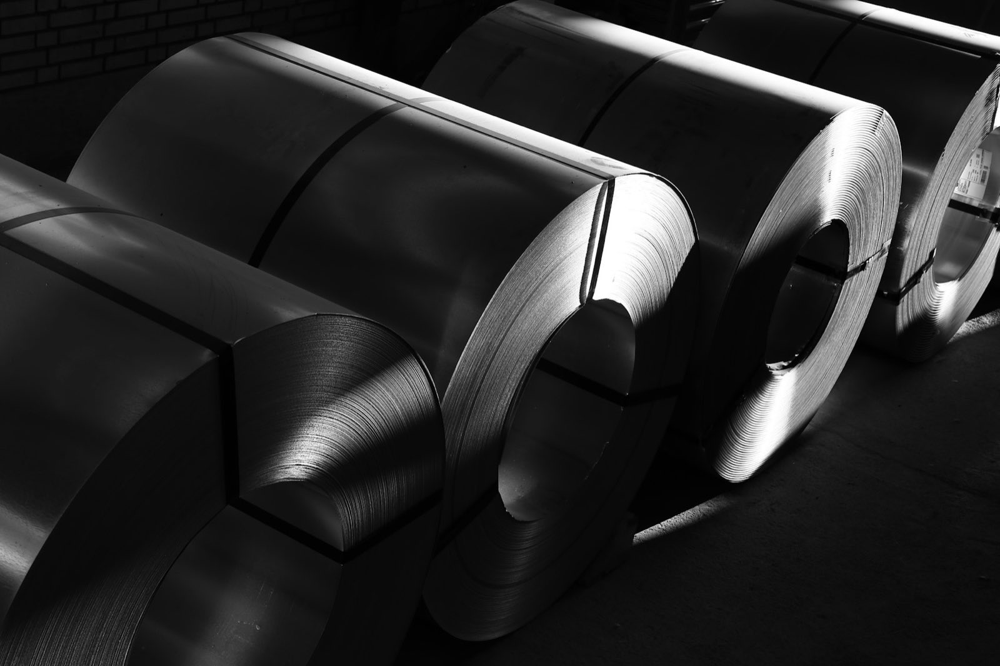
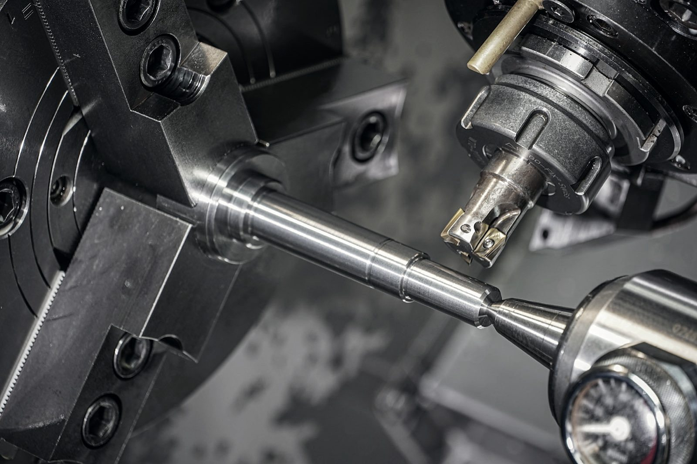
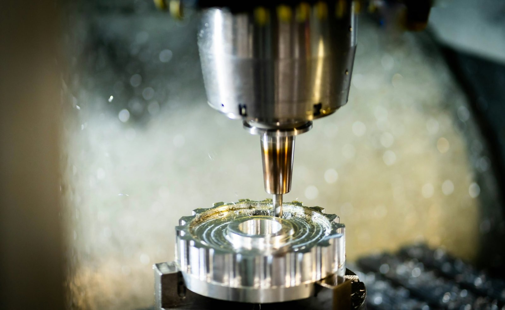

01
空調設備
筐体まわりの板金部品や、風の通り道になる部品。数が出て、形が長く変わらない。同じものを同じ寸法で出し続ける力が要ります。

Products
表からは見えないところで、絞られたステンレスが形を受け持っています。同じ形を、同じ精度で出し続けること。それが求められる分野です。
01 加工品
ルーバー状の板、リング、円筒の絞り、平らな抜き物。深さも大きさも違う形が、同じ工場から出ていきます。






※ 写真は加工品の一例です。守秘のため、納入先および品番は掲載していません。
02 3つの分野

01
筐体まわりの板金部品や、風の通り道になる部品。数が出て、形が長く変わらない。同じものを同じ寸法で出し続ける力が要ります。

02
繰り返し数量の出る絞り物。ロットが大きく、工程が安定していることが前提になる分野です。台数のある工場が向きます。
03
深さがあり、しかも面がきれいでなければならないもの。絞り傷や焼き付きがそのまま製品の見た目に出るため、条件出しが効きます。
03 得意な形
円筒・角筒。再絞りを重ねて出す形
しわと割れの間が狭いもの
穴・ルーバー・切り欠きが同居する部品
M3〜M4のタップを自社で通せます
板厚2.3ミリまでNCコイルフィーダーで送れます

CONTACT ご相談
できる・できないの見当は、その場で付きます。板厚、材質、数量、いつ要るか。この4つが分かれば、あとはこちらで組み立てます。
これはデモサイトです。掲載内容と写真は公開情報をもとにした制作イメージで、実際の営業内容とは異なる場合があります。
制作：NextRay